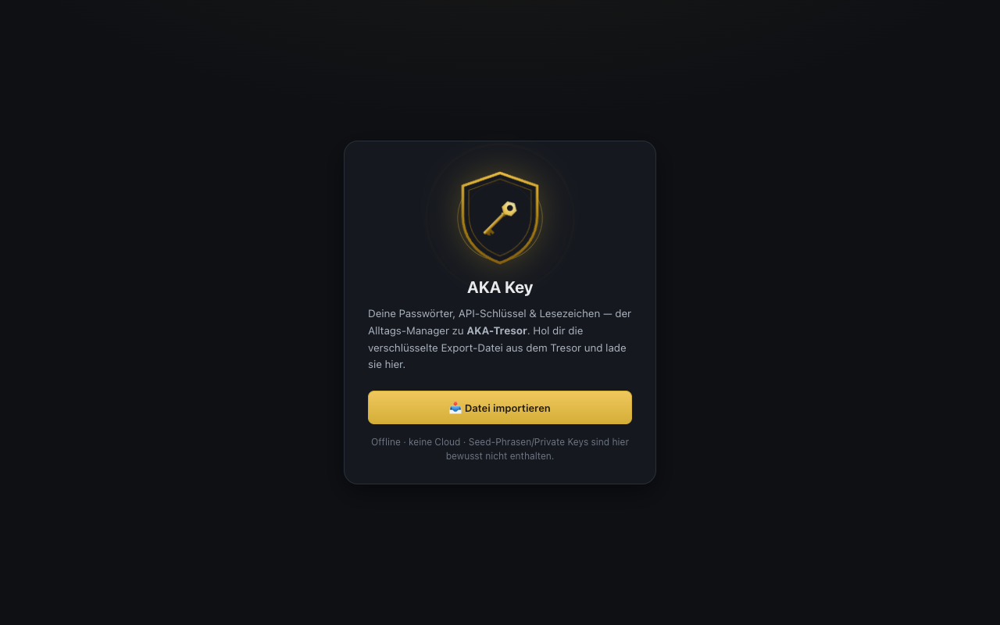
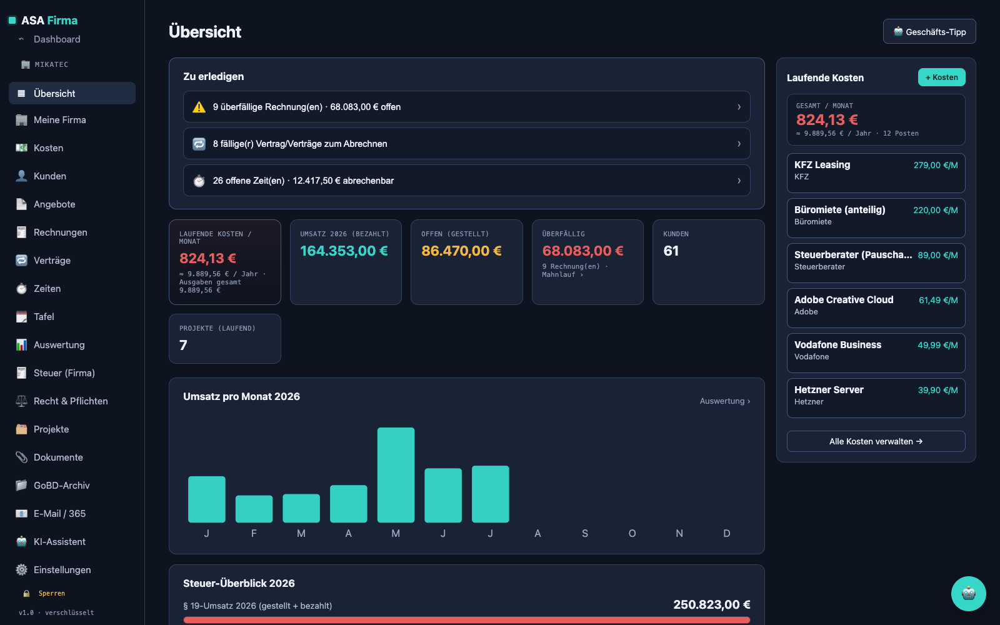

Individuelle Software & IT-Lösungen
Eigene Anwendungen für Desktop, Web und Mobil, KI-Integration und Automatisierung — dazu IT-Service, Datenpflege und Sicherheit. Ein Ansprechpartner, klare Absprachen. Was möglich ist, zeige ich unten an echten Projekten.
Was Sie bekommen
Keine Baukasten-Lösungen — jede Anwendung wird für Ihren Fall entworfen und programmiert.
Maßgeschneidert
Entwickelt für Ihren Ablauf und Ihre Anforderungen — nicht Sie passen sich der Software an, sondern die Software sich Ihnen.
Klar erklärt
Technik verständlich, ohne Fachjargon. Sie wissen in jeder Phase, woran Sie sind und was als Nächstes passiert.
Alles aus einer Hand
Konzept, Entwicklung, Design und Übergabe von einer Person — kurze Wege, keine Reibungsverluste. Der Quellcode gehört Ihnen.
Aktuelle Arbeit aus der Werkstatt
Vier eigene Anwendungen — gebaut, um zu zeigen und zu erklären, was technisch möglich ist.

AKA-Tresor
Digitaler Tresor für sensible Daten — AES-256-verschlüsselt, komplett offline, ohne Konto und ohne Cloud.

AKA Key
Passwörter, API-Schlüssel und Lesezeichen im Alltag griffbereit — die Schwester-App zum Tresor.

ASA Firma
Komplette Firmen-Verwaltung: Kunden, Angebote, Rechnungen und Projekte — verschlüsselt gespeichert.

Netz-Atlas
Interaktiver Atlas des weltweiten Internets — Seekabel-Karte und Live-Messung der eigenen Verbindung.
NEXUS
Ein verteiltes KI-System — entworfen als digitales Gehirn für Rechner, Firma und Alltag.
langfristiges Vorhaben · in früher EntwicklungNEXUS ist mein Langzeit-Vorhaben: Vier Module wachsen zu einer Plattform zusammen, in der KI nicht Zusatzfunktion ist, sondern Architektur-Prinzip — ein System, das Wissen, Geräte und Abläufe zu einem Ganzen verbindet. Das wird es können:
- KI/AI-Anbindung auf Systemebene — Sprachmodelle (LLMs) werden über Schnittstellen (APIs) tief in Betriebssystem und Firmen-Software integriert: Mail, Kalender, Verwaltung, Dateien
- KI-Gehirn-Simulation — das Struktur-Netz (rechts) bildet Wissen als räumliches Netz nach: 2.323 adressierbare Knoten in 9 Schalen, mit Signalfluss vom KI-Kern K1 bis in die äußerste Schale
- Persistentes Gedächtnis & Regelwerk — Kontext-Speicher, Berechtigungs-System und Regel-Engine: die KI kennt Projekte und Zuständigkeiten, lernt dazu und handelt nur im erlaubten Rahmen
- Automatisierung mit KI-Agenten — wiederkehrende Abläufe laufen selbstständig: überwachen, auswerten, ausführen, berichten — vom einzelnen Skript bis zur Prozesskette
- Verteilter Verbund — mehrere Nexus-Instanzen auf verschiedenen Rechnern koppeln sich zu einem Cluster: gemeinsames Wissen, synchronisierte Aufgaben, ein System über viele Geräte
- Lokal & privat — Daten bleiben verschlüsselt auf den eigenen Geräten, mit klaren Berechtigungen je Modul — der gleiche Anspruch wie beim AKA-Tresor
Bewusst ein großes Ziel — hier dokumentiere ich den Weg dorthin, Schritt für Schritt und ehrlich.
Haben Sie ein Projekt im Kopf?
Erzählen Sie mir unverbindlich davon. Gemeinsam finden wir heraus, was möglich ist — und was es braucht.
Projekt anfragen